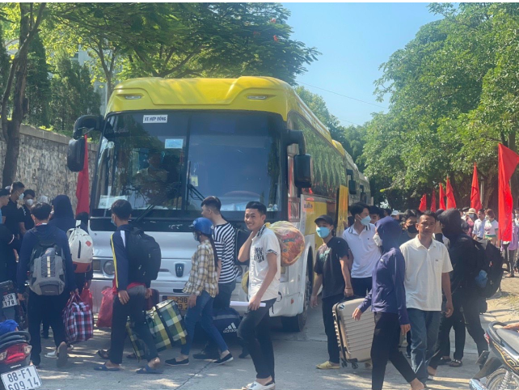
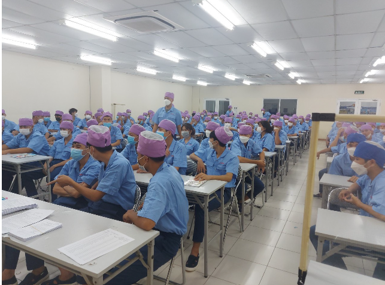

CHƯƠNG TRÌNH “SINH VIÊN THỰC TẬP TRẢI NGHIỆM TẠI DOANH NGHIỆP”
Thực hiện Kế hoạch số 20/CĐKTKT ngày 25/08/2022 về việc tổ chức cho sinh viên đi thực tập trải nghiệm tại các doanh nghiệp.Thực hiện chương trình đào tạo và kế hoạch năm học 2022-2023. Trung tâm Tuyển sinh và Quan hệ với doanh nghiệp phối hợp với Công ty TNHH Điện tử Canon Việt Nam tổ chức cho hơn 150 sinh viên khoa Điện-Điện tử; khoa Cơ khí đi thực tập trải nghiệm tại Công ty TNHH Điện tử Canon Việt Nam
Chiều ngày 05/9/2022, tại Hội trường - Trường Cao đẳng Kinh tế - Kỹ thuật Vĩnh Phúc đã tổ chức “Chương trình đưa sinh viên đi thực tập trải nghiệm tại doanh nghiệp đợt 3 năm 2022” . Thực tập trải nghiệm tại các doanh nghiệp là hoạt động thường xuyên của Trường Cao đẳng Kinh tế - Kỹ thuật Vĩnh Phúc nhằm rút ngắn khoảng cách giữa lý thuyết và thực tiễn, giúp sinh viên cập nhật kiến thức thực tế, rèn luyện kỹ năng nghề nghiệp và có cái nhìn cận cảnh hơn về môi trường làm việc trong tương lai.
Trong quá trình thực tập trải nghiệm tại doanh nghiệp các em sinh viên có cơ hội lắng nghe chia sẻ về các kỹ năng; vị trí công việc và mô hình tổ chức phòng ban tại công ty; cơ hội nghề nghiệp; kinh nghiệm làm việc; các tiêu chí tuyển dụng doanh nghiệp cần ở ứng viên, các chia sẻ của quá trình làm việc của các anh/chị quản lý sản xuất, các lãnh đạo của doanh nghiệp. Ngoài ra, sinh viên còn tham quan khu vực làm việc, văn hóa doanh nghiệp, không gian làm việc chuyên nghiệp, từ đó sinh viên nắm được tiêu chí tuyển chọn nhân sự của của các doanh nghiệp để phần nào tự đánh giá được khả năng của bản thân và chủ động cải thiện năng lực.Chương trình thực tập trải nghiệm không chỉ giúp sinh viên nâng cao về kiến thức và kỹ năng, mà quan trọng hơn hết là sinh viên hình được thái độ nghiêm túc, tác phong công nghiệp và chuyên nghiệp trong học tập cũng như công việc để đáp ứng được yêu cầu của thị trường lao động.
Thời gian đi thực tập trải nghiệm thực tế tại doanh nghiệp các em được doanh nghiệp hỗ trợ mức tiền lương từ 5 đến 6 triệu đồng/tháng, được đánh giá kết quả thực tập trải nghiệm công việc thực tế tại công ty của từng sinh viên về tay nghề, kỹ năng, ý kỷ luật, chuyên cần.
Một số hình ảnh các em sinh viên Trường Cao đẳng Kinh tế - Kỹ thuật Vĩnh Phúc lên đường đi thực tập trải nghiệm thực tại doanh nghiệp:
Trường Cao đẳng Kinh tế - Kỹ thuật Vĩnh Phúc và đại diện công ty Canon ký kết bàn giao sinh viên đi trải nghiệm thực tế
HSSV chuẩn bị hành lý đi trải nghiệm thực tế
HSSV nghe phổ biến nội quy quy định của công ty